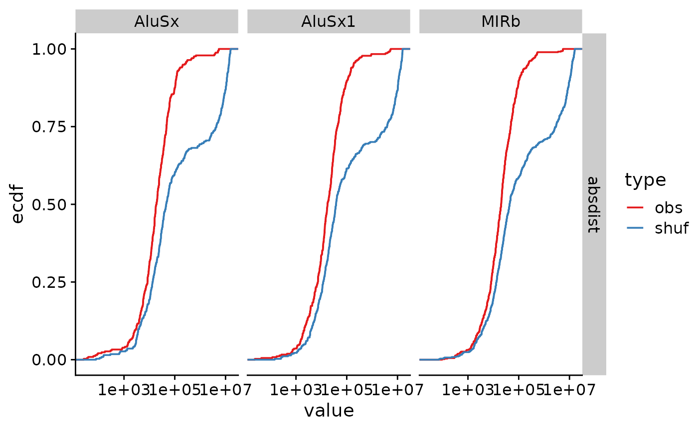

Overview
valr includes several functions for exploring
statistical relationships between sets of intervals.
Calculate significance of overlaps between sets of intervals with
bed_fisher()andbed_projection().Quantify relative and absolute distances between sets of intervals with
bed_reldist()andbed_absdist().Quantify extent of overlap between sets of intervals with
bed_jaccard().
In this vignette we explore the relationship between transcription start sites and repetitive elements in the human genome.
library(valr)
library(dplyr)
library(ggplot2)
library(cowplot)
library(tidyr)
# load repeats and genes. Data in the valr package is restricted to chr22; the entire
# files can be downloaded from UCSC.
rpts <- read_bed(valr_example("hg19.rmsk.chr22.bed.gz"))
genes <- read_bed12(valr_example("hg19.refGene.chr22.bed.gz"))
# load chrom sizes
genome <- read_genome(valr_example("hg19.chrom.sizes.gz"))
# create 1 bp intervals representing transcription start sites
tss <- create_tss(genes)
tss
#> # A tibble: 1,267 × 6
#> chrom start end name score strand
#> <chr> <dbl> <dbl> <chr> <chr> <chr>
#> 1 chr22 16193008 16193009 NR_122113 0 -
#> 2 chr22 16157078 16157079 NR_133911 0 +
#> 3 chr22 16162065 16162066 NR_073459 0 +
#> 4 chr22 16162065 16162066 NR_073460 0 +
#> 5 chr22 16231288 16231289 NR_132385 0 -
#> 6 chr22 16287936 16287937 NM_001136213 0 -
#> 7 chr22 16274608 16274609 NR_046571 0 +
#> 8 chr22 16449803 16449804 NM_001005239 0 -
#> 9 chr22 17073699 17073700 NM_014406 0 -
#> 10 chr22 17082800 17082801 NR_001591 0 +
#> # ℹ 1,257 more rowsDistance metrics
First we define a function that takes x and
y intervals and computes distance statistics (using
bed_reldist() and bed_absdist()) for specified
groups. The value of each statistic is assigned to a .value
column.
distance_stats <- function(x, y, genome, group_var, type = NA) {
group_by(x, !!rlang::sym(group_var)) |>
do(
reldist = bed_reldist(., y, detail = TRUE) |>
select(.value = .reldist),
absdist = bed_absdist(., y, genome) |>
select(.value = .absdist)
) |>
tidyr::pivot_longer(
cols = -name,
names_to = "stat",
values_to = "value"
) |>
mutate(type = type)
}We use the distance_stats() function to apply the
bed_absdist() function to each group of data.
obs_stats <- distance_stats(rpts, tss, genome, "name", "obs")
obs_stats
#> # A tibble: 2,106 × 4
#> name stat value type
#> <chr> <chr> <list> <chr>
#> 1 (A)n reldist <tibble [27 × 1]> obs
#> 2 (A)n absdist <tibble [28 × 1]> obs
#> 3 (AAAAACA)n reldist <tibble [1 × 1]> obs
#> 4 (AAAAACA)n absdist <tibble [1 × 1]> obs
#> 5 (AAAAC)n reldist <tibble [6 × 1]> obs
#> 6 (AAAAC)n absdist <tibble [7 × 1]> obs
#> 7 (AAAAG)n reldist <tibble [2 × 1]> obs
#> 8 (AAAAG)n absdist <tibble [2 × 1]> obs
#> 9 (AAAAT)n reldist <tibble [3 × 1]> obs
#> 10 (AAAAT)n absdist <tibble [4 × 1]> obs
#> # ℹ 2,096 more rowsAnd the same is done for a set of shuffled group of data.
bed_shuffle() is used to shuffle coordinates of the repeats
within each chromosome (i.e., the coordinates change, but the chromosome
stays the same.)
shfs <- bed_shuffle(rpts, genome, within = TRUE)
shf_stats <- distance_stats(shfs, tss, genome, "name", "shuf")Now we can bind the observed and shuffled data together, and do some tidying to put the data into a format appropriate for a statistical test. This involves:
-
unnest()ing the data frames - creating groups for each repeat (
name), stat (reldistorabsdist) and type (obsorshf) - adding unique surrogate row numbers for each group
- using
tidyr::pivot_wider()to create two newobsandshufcolumns - removing rows with
NAvalues.
res <- bind_rows(obs_stats, shf_stats) |>
tidyr::unnest(value) |>
group_by(name, stat, type) |>
mutate(.id = row_number()) |>
tidyr::pivot_wider(
names_from = "type",
values_from = ".value"
) |>
na.omit()
res
#> # A tibble: 16,785 × 5
#> # Groups: name, stat [1,904]
#> name stat .id obs shuf
#> <chr> <chr> <int> <dbl> <dbl>
#> 1 (A)n reldist 1 0.363 0.177
#> 2 (A)n reldist 2 0.429 0.404
#> 3 (A)n reldist 3 0.246 0.119
#> 4 (A)n reldist 4 0.478 0.157
#> 5 (A)n reldist 5 0.260 0.176
#> 6 (A)n reldist 6 0.286 0.225
#> 7 (A)n reldist 7 0.498 0.128
#> 8 (A)n reldist 8 0.237 0.385
#> 9 (A)n reldist 9 0.314 0.413
#> 10 (A)n reldist 10 0.149 0.234
#> # ℹ 16,775 more rowsNow that the data are formatted, we can use the non-parametric
ks.test() to determine whether there are significant
differences between the observed and shuffled data for each group.
broom::tidy() is used to reformat the results of each test
into a tibble, and the results of each test are
pivoted to into a type column for each test
type.
library(broom)
pvals <- res |>
do(
twosided = tidy(ks.test(.$obs, .$shuf)),
less = tidy(ks.test(.$obs, .$shuf, alternative = "less")),
greater = tidy(ks.test(.$obs, .$shuf, alternative = "greater"))
) |>
tidyr::pivot_longer(cols = -c(name, stat), names_to = "alt", values_to = "type") |>
unnest(type) |>
select(name:p.value) |>
arrange(p.value)Histgrams of the different stats help visualize the distribution of p.values.
ggplot(pvals, aes(p.value)) +
geom_histogram(binwidth = 0.05) +
facet_grid(stat ~ alt) +
theme_cowplot()
We can also assess false discovery rates (q.values) using
p.adjust().
pvals <-
group_by(pvals, stat, alt) |>
mutate(q.value = p.adjust(p.value)) |>
ungroup() |>
arrange(q.value)Finally we can visualize these results using
stat_ecdf().
res_gather <- tidyr::pivot_longer(res,
cols = -c(name, stat, .id),
names_to = "type",
values_to = "value"
)
signif <- head(pvals, 5)
res_signif <-
signif |>
left_join(res_gather, by = c("name", "stat"))
#> Warning in left_join(signif, res_gather, by = c("name", "stat")): Detected an unexpected many-to-many relationship between `x` and `y`.
#> ℹ Row 1 of `x` matches multiple rows in `y`.
#> ℹ Row 29037 of `y` matches multiple rows in `x`.
#> ℹ If a many-to-many relationship is expected, set `relationship =
#> "many-to-many"` to silence this warning.
ggplot(res_signif, aes(x = value, color = type)) +
stat_ecdf() +
facet_grid(stat ~ name) +
theme_cowplot() +
scale_x_log10() +
scale_color_brewer(palette = "Set1")
Projection test
bed_projection() is a statistical approach to assess the
relationship between two intervals based on the binomial distribution.
Here, we examine the distribution of repetitive elements within the
promoters of coding or non-coding genes.
First we’ll extract 5 kb regions upstream of the transcription start sites to represent the promoter regions for coding and non-coding genes.
# create intervals 5kb upstream of tss representing promoters
promoters <-
bed_flank(genes, genome, left = 5000, strand = TRUE) |>
mutate(name = ifelse(grepl("NR_", name), "non-coding", "coding")) |>
select(chrom:strand)
# select coding and non-coding promoters
promoters_coding <- filter(promoters, name == "coding")
promoters_ncoding <- filter(promoters, name == "non-coding")
promoters_coding
#> # A tibble: 973 × 6
#> chrom start end name score strand
#> <chr> <int> <int> <chr> <chr> <chr>
#> 1 chr22 16287937 16292937 coding 0 -
#> 2 chr22 16449804 16454804 coding 0 -
#> 3 chr22 17073700 17078700 coding 0 -
#> 4 chr22 17302589 17307589 coding 0 -
#> 5 chr22 17302589 17307589 coding 0 -
#> 6 chr22 17489112 17494112 coding 0 -
#> 7 chr22 17560848 17565848 coding 0 +
#> 8 chr22 17560848 17565848 coding 0 +
#> 9 chr22 17602213 17607213 coding 0 -
#> 10 chr22 17602257 17607257 coding 0 -
#> # ℹ 963 more rows
promoters_ncoding
#> # A tibble: 294 × 6
#> chrom start end name score strand
#> <chr> <int> <int> <chr> <chr> <chr>
#> 1 chr22 16152078 16157078 non-coding 0 +
#> 2 chr22 16157065 16162065 non-coding 0 +
#> 3 chr22 16157065 16162065 non-coding 0 +
#> 4 chr22 16193009 16198009 non-coding 0 -
#> 5 chr22 16231289 16236289 non-coding 0 -
#> 6 chr22 16269608 16274608 non-coding 0 +
#> 7 chr22 17077800 17082800 non-coding 0 +
#> 8 chr22 17156430 17161430 non-coding 0 -
#> 9 chr22 17229328 17234328 non-coding 0 -
#> 10 chr22 17303363 17308363 non-coding 0 +
#> # ℹ 284 more rowsNext we’ll apply the bed_projection() test for each
repeat class for both coding and non-coding regions.
# function to apply bed_projection to groups
projection_stats <- function(x, y, genome, group_var, type = NA) {
group_by(x, !!rlang::sym(group_var)) |>
do(
n_repeats = nrow(.),
projection = bed_projection(., y, genome)
) |>
mutate(type = type)
}
pvals_coding <- projection_stats(rpts, promoters_coding, genome, "name", "coding")
pvals_ncoding <- projection_stats(rpts, promoters_ncoding, genome, "name", "non_coding")
pvals <-
bind_rows(pvals_ncoding, pvals_coding) |>
ungroup() |>
tidyr::unnest(cols = c(n_repeats, projection)) |>
select(-chrom)
# filter for repeat classes with at least 10 intervals
pvals <- filter(
pvals,
n_repeats > 10,
obs_exp_ratio != 0
)
# adjust pvalues
pvals <- mutate(pvals, q.value = p.adjust(p.value))
pvals
#> # A tibble: 179 × 7
#> name n_repeats p.value obs_exp_ratio lower_tail type q.value
#> <chr> <int> <dbl> <dbl> <chr> <chr> <dbl>
#> 1 (A)n 28 0.00353 4.72 FALSE non_coding 0.558
#> 2 (AT)n 48 0.298 0.917 FALSE non_coding 1
#> 3 (CA)n 31 0.156 1.42 FALSE non_coding 1
#> 4 (GT)n 42 0.247 1.05 FALSE non_coding 1
#> 5 (T)n 61 0.405 0.721 FALSE non_coding 1
#> 6 (TG)n 40 0.0622 2.20 FALSE non_coding 1
#> 7 A-rich 54 0.348 0.815 FALSE non_coding 1
#> 8 Alu 15 0.0446 2.93 FALSE non_coding 1
#> 9 AluJb 271 0.0225 1.79 FALSE non_coding 1
#> 10 AluJo 208 0.0216 1.90 FALSE non_coding 1
#> # ℹ 169 more rowsThe projection test is a two-tailed statistical test. A significant
p-value indicates either enrichment or depletion of query intervals
compared to the reference interval sets. A value of
lower_tail = TRUE column indicates that the query intervals
are depleted, whereas lower_tail = FALSE indicates that the
query intervals are enriched.